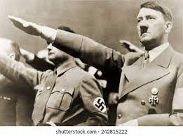

Introduction
Adolf Hitler was an Austrian-born German politician who was the dictator of Germany from 1933 until his death in 1945. He rose to power as the leader of the Nazi Party,[a] becoming the chancellor in 1933 and then assuming the title of Führer und Reichskanzler in 1934.[b] During his dictatorship, he initiated World War II in Europe by invading Poland on 1 September 1939. He was closely involved in military operations throughout the war and was central to the perpetration of the Holocaust, the genocide of about six million Jews and millions of other victims.
Hitler was born in Austria-Hungary and was raised near Linz. He lived in Vienna later in the first decade of the 1900s and moved to Germany in 1913. He was decorated during his service in the German Army in World War I. In 1919, he joined the German Workers' Party (DAP), the precursor of the Nazi Party, and was appointed leader of the Nazi Party in 1921. In 1923, he attempted to seize governmental power in a failed coup in Munich and was imprisoned with a sentence of five years. In jail, he dictated the first volume of his autobiography and political manifesto Mein Kampf ("My Struggle"). After his early release in 1924, Hitler gained popular support by attacking the Treaty of Versailles and promoting pan-Germanism, anti-Semitism and anti-communism with charismatic oratory and Nazi propaganda. He frequently denounced international capitalism and communism as part of a Jewish conspiracy.
Conditions were favourable for the growth of the small party, and Hitler was sufficiently astute to take full advantage of them. When he joined the party, he found it ineffective, committed to a program of nationalist and socialist ideas but uncertain of its aims and divided in its leadership. He accepted its program but regarded it as a means to an end. His propaganda and his personal ambition caused friction with the other leaders of the party. Hitler countered their attempts to curb him by threatening resignation, and because the future of the party depended on his power to organize publicity and to acquire funds, his opponents relented. In July 1921 he became their leader with almost unlimited powers. From the first he set out to create a mass movement, whose mystique and power would be sufficient to bind its members in loyalty to him. He engaged in unrelenting propaganda through the party newspaper, the Völkischer Beobachter (“Popular Observer,” acquired in 1920), and through meetings whose audiences soon grew from a handful to thousands. With his charismatic personality and dynamic leadership, he attracted a devoted cadre of Nazi leaders, men whose names today live in infamy—Johann Dietrich Eckart (who acted as a mentor for Hitler), Alfred Rosenberg, Rudolf Hess, Hermann Göring, and Julius Streicher.
The climax of this rapid growth of the Nazi Party in Bavaria came in an attempt to seize power in the Munich (Beer Hall) Putsch of November 1923, when Hitler and General Erich Ludendorff tried to take advantage of the prevailing confusion and opposition to the Weimar Republic to force the leaders of the Bavarian government and the local army commander to proclaim a national revolution. In the melee that resulted, the police and the army fired at the advancing marchers, killing a few of them. Hitler was injured, and four policemen were killed. Placed on trial for treason, he characteristically took advantage of the immense publicity afforded to him. He also drew a vital lesson from the Putsch—that the movement must achieve power by legal means. He was sentenced to prison for five years but served only nine months, and those in relative comfort at Landsberg castle. Hitler used the time to dictate the first volume of Mein Kampf, his political autobiography as well as a compendium of his multitudinous ideas.